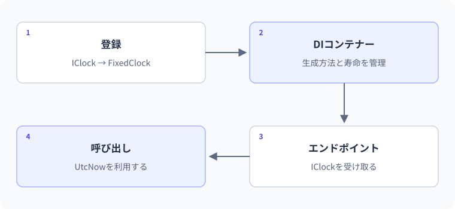

31 DI・設定・ログ — 詳細解説
登録した実装が要求処理へ渡る経路。
図解：登録した実装が要求処理へ渡る経路

依存オブジェクトの生成と利用の分離
依存とは、ある処理が仕事をするために必要とする別の部品です。通知処理がメール送信部品を使う、APIがデータ保存部品を使う、といった関係です。DIはDependency Injectionの略で、必要な部品を外から渡す設計です。第12レッスンでコンストラクターへinterfaceの実装を渡したことが、その基本です。
DIコンテナーは、どの型にどの実装を渡すか、いつ作るか、いつまで使うかを登録から管理する仕組みです。DIはフレームワークの機能名だけではありません。手動でnewして渡す設計もDIです。コンテナーは組み立てや寿命の管理を助けます。
最小例：手動で依存を渡す
var service = new GreetingService(new FixedClock());
Console.WriteLine(service.Create());
public interface IClock
{
DateTimeOffset UtcNow { get; }
}
public sealed class FixedClock : IClock
{
public DateTimeOffset UtcNow => new(2026, 9, 14, 0, 0, 0, TimeSpan.Zero);
}
public sealed class GreetingService
{
private readonly IClock _clock;
public GreetingService(IClock clock)
{
_clock = clock ?? throw new ArgumentNullException(nameof(clock));
}
public string Create() => $"UTC年:{_clock.UtcNow.Year}";
}期待出力はUTC年:2026です。GreetingServiceは時計を自分でnewせず、外から受け取ります。実際の現在時刻を返す時計と、テスト用の固定時計を差し替えられます。業務処理が時刻の取得方法へ直接結び付かないことが利点です。
コンテナーへ登録してAPIから利用する
var builder = WebApplication.CreateBuilder(args);
builder.Services.AddSingleton<IClock, SystemClock>();
builder.Services.AddScoped<GreetingService>();
var app = builder.Build();
app.MapGet("/greeting", (GreetingService service) =>
Results.Ok(new { message = service.Create() }));
app.Run();
public interface IClock
{
DateTimeOffset UtcNow { get; }
}
public sealed class SystemClock : IClock
{
public DateTimeOffset UtcNow => DateTimeOffset.UtcNow;
}
public sealed class GreetingService
{
private readonly IClock _clock;
public GreetingService(IClock clock) => _clock = clock;
public string Create() => $"UTC年:{_clock.UtcNow.Year}";
}期待する応答は200で、実際のUTCの年を含むmessageです。具体的な年を恒久的な正解値として固定しません。AddSingleton<IClock,SystemClock>はIClockが必要なときSystemClockを渡す登録、AddScoped<GreetingService>は要求のスコープごとに利用する登録です。スコープは、部品を共有し寿命を管理する範囲を意味します。
一つのリクエストで組み立てられる順序
- 1起動時の登録
IClock→SystemClock、GreetingService→Scoped
- 2GET /greeting
この要求のスコープを使う
- 3GreetingServiceを解決
コンストラクターにIClockが必要
- 4IClockを取得
SingletonのSystemClockを再利用
- 5ハンドラーを呼ぶ
service.Createから時計を利用
- 6要求終了
スコープが所有する破棄対象を解放
登録しただけで全てのオブジェクトがその場で作られるとは限りません。必要になったときに解決・生成されるものがあります。アプリの開始、最初の利用、各リクエストという時点を分けて考えます。
Singleton・Scoped・Transientを選ぶ
| 寿命 | 共有する範囲 | 選ぶ例 | 注意 |
|---|---|---|---|
| Singleton | コンテナー内で同じ実体 | 状態の少ない共通サービス、共有キャッシュ | 同時利用に安全な設計が必要 |
| Scoped | 一つのスコープ | リクエスト単位の業務処理、DB操作単位 | より長寿命へ捕まえない |
| Transient | 解決のたびに新しい実体 | 軽い独立した処理部品 | 生成回数や所有寿命を理解 |
「毎回新しいから安全」「Singletonだから速い」だけで選びません。共有したい状態が何か、どの範囲の処理を一まとまりにしたいか、破棄がいつ必要かを判断します。Transientのオブジェクトでも、長寿命のオブジェクトが保持すれば実際に長く使われる場合があります。
間違い：SingletonがScopedを持ち続ける
builder.Services.AddScoped<RequestWork>();
builder.Services.AddSingleton<GlobalService>();
public sealed class RequestWork { }
public sealed class GlobalService
{
public GlobalService(RequestWork work) { }
}これは登録関係を示す意図的な問題例で、単独のProgram.csではありません。GlobalServiceを長期間共有するのに、要求単位であるはずのRequestWorkへ依存しています。スコープ検証が有効な環境では、解決時などに不正な寿命として検出されます。検証を無効にすることは根本修正ではありません。
この処理自体が要求単位ならGlobalServiceもScopedへ変えます。
builder.Services.AddScoped<RequestWork>();
builder.Services.AddScoped<GlobalService>();本当にバックグラウンドの長寿命処理からScopedが必要なら、必要な処理単位で明示的にスコープを作り、その中で解決・利用・破棄する設計にします。無条件にSingletonへ変更してエラーを消すと、共有状態や資源の寿命が変わります。
設定はコードに固定しない
設定は、環境や運用によって変える値です。アプリ名、外部サービスのURL、制限値などをコード本体と分けると、同じビルドを別環境へ適用しやすくなります。appsettings.json、環境別JSON、開発用シークレット、環境変数、コマンドラインなどから読みます。
WebApplication.CreateBuilderの既定構成では、一般にアプリ設定の優先度はコマンドライン、環境変数、DevelopmentのUser Secrets、環境別JSON、通常のappsettings.jsonの順です。追加のプロバイダーやホスト設定には別の規則もあるため、全ての設定で無条件に同じと一般化しません。後から同じキーを上書きする設定がないか確認します。
appsettings.jsonの例：
{
"Study": {
"Title": "C# Learning Lab",
"MaxItems": 100
}
}環境変数で階層を表す場合、Study__Titleのように二重アンダースコアを使う形式が利用できます。パスワードやAPIキーはこの公開用ファイルへ書きません。開発用User Secretsも暗号化された秘密保管庫として扱わず、本番では適切な秘密管理を使います。
実用例：設定を型へまとめ、起動時に検証する
using Microsoft.Extensions.Options;
var builder = WebApplication.CreateBuilder(args);
builder.Services.AddOptions<StudyOptions>()
.Bind(builder.Configuration.GetSection("Study"))
.Validate(options => !string.IsNullOrWhiteSpace(options.Title), "Titleは必須です")
.Validate(options => options.MaxItems is >= 1 and <= 1000, "MaxItemsは1〜1000です")
.ValidateOnStart();
var app = builder.Build();
app.MapGet("/settings-summary", (IOptions<StudyOptions> options) =>
Results.Ok(new { title = options.Value.Title, maxItems = options.Value.MaxItems }));
app.Run();
public sealed class StudyOptions
{
public string Title { get; set; } = "C# Learning Lab";
public int MaxItems { get; set; } = 100;
}上の設定なら200とtitle、maxItems=100を含むJSONが期待されます。IOptions<T>は設定を型付きで受け取る窓口です。Bindは設定項目をプロパティへ結び付け、Validateは規則を指定し、ValidateOnStartは起動時に不正を発見できるようにします。設定を読めたことと、使ってよい値であることを分けています。
このAPIは公開してよい設定だけを明示して返します。設定全体をそのまま返すと、後から追加した秘密情報まで漏れる危険があるため避けます。実務の管理用情報はアクセス制御も必要です。
ログは調査できる事実を残す
ログは、起きた出来事を後から調べるための記録です。表示用メッセージと同じではなく、いつ、どの操作で、どの対象が、どうなったかを残します。ログレベルは記録の重要度や目的を表し、Information、Warning、Errorなどがあります。
logger.LogInformation("Todo {TodoId} was created", item.Id);これは既にloggerとitemがある処理内の断片です。{TodoId}は構造化ログの名前付きの項目です。文字列補間だけで一つの文章へ潰すより、ログ基盤でIDを項目として扱いやすくなります。パスワード、認証トークン、個人情報を含む本文を無制限に記録しないでください。
例外は必要な境界で記録し、同じ失敗を何層でも重複記録して情報を埋めないようにします。500の応答には内部のスタックトレースや秘密設定を返さず、調査用の識別子でログと結び付ける設計を検討します。
3段階の練習
基礎：FixedClockとSystemClockを差し替えたとき、GreetingServiceの本体を変更する必要があるか説明します。interfaceが同じなら不要です。newする場所と使う場所を区別します。
標準：設定MaxItemsを0にしたとき、APIを使い始める前に不正が分かる設計を考えます。ValidateとValidateOnStartが中心です。不正値を黙って100へ置き換えるかは、運用仕様として別に決めます。
応用：要求単位の処理と共有保存部品を組み合わせ、各寿命を図にしてください。共有保存部品をSingletonにするなら、その内部の共有データ操作が同時利用に安全かを別途確認します。DI登録が成功することとスレッド安全性は同じではありません。
境界・比較例：依存する計算ルールを渡す
依存性はインターフェイスだけでなくデリゲートとして渡すこともできます。規模と責務に合う最小限の形を選びます。
var service = new PriceService(price => price + 100);
Console.WriteLine(service.Total(500));
class PriceService
{
private readonly Func<int, int> calculate;
public PriceService(Func<int, int> calculate) { this.calculate = calculate; }
public int Total(int price) => calculate(price);
}想定出力
600公式資料
確認日：2026年9月14日。本文の理解を補うための資料です。学習対象は.NET 10 / C# 14です。パッチ番号は固定しません。